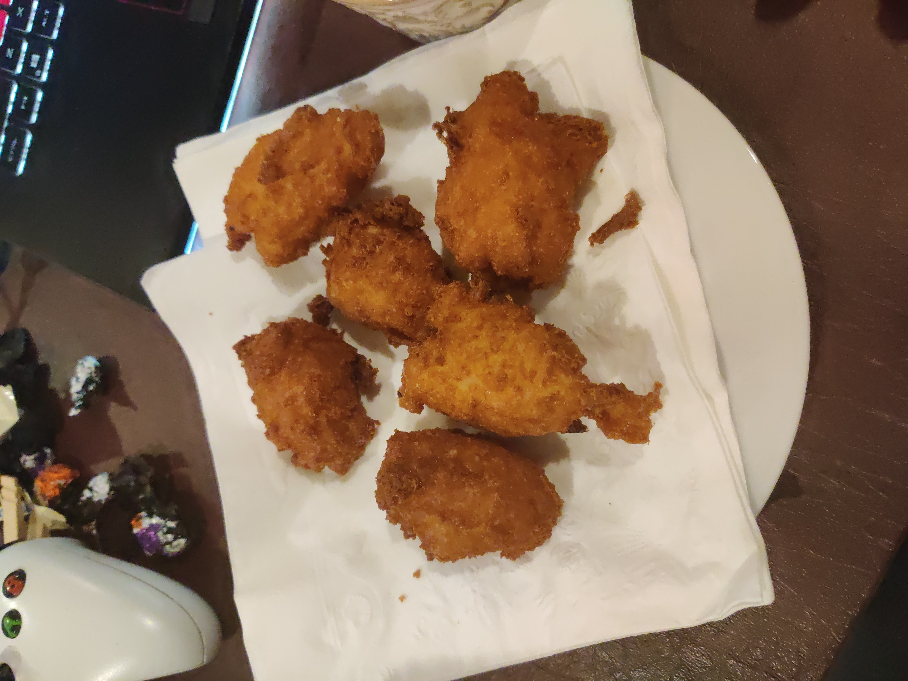

Mozzarella Puffs

Description
these mozzarella puffs crispier and more fun to eat than the original fried mozzarella stick, but they're also easier since no breading is required! I haven't forgotten the marinara sauce, but feel free to use other sauces.
Ingredients
- 1/3 cup water
- 2 tablespoons unsalted butter
- 1 teaspoon kosher salt
- 1/3 curp AP flour
- 1 large egg
- pinch cayenne pepper
- 1 pinch freshly ground black pepper
- 1/2 teaspoon dried oregano
- 1 cup marinara sauce
- 1/2 teaspoon red pepper flakes
- 1 teaspoon balsamic vinegar
- 4 ounces low-moisture mozzarella cheese
- 4 cups canola oil
- 1 anchovy fillet
Steps
- Combine water, butter, and salt in a saucepan over medium-high heat. Bring to a simmer; pour in flour all at once and reduce heat to medium. Stir with a wooden spoon or spatula until a dough starts coming together. Cook, scraping up and stirring the dough, for 2 to 3 minutes.
- Remove from heat; transfer dough to a mixing bowl. Let cool until no longer hot but still very warm, 5 to 10 minutes. Add egg and season with cayenne and freshly ground black pepper. Whisk vigorously until mixture combines into a very soft, sticky dough. Switch to a spatula and scrape dough into a ball.
- Seal dough and spatula with plastic wrap and refrigerate in the bowl until cool, about 1 hour.
- In the meantime, season marinara sauce with oregano, red pepper flakes, balsamic vinegar in a small pot over medium heat. Add anchovy fillet. Stir together and bring to a simmer. Let simmer for 10 minutes; turn off heat and let sit until ready to use.
- Grate mozzarella cheese over the dough and stir to combine.
- Heat oil to 350 degrees F (175 degrees C) in a deep fryer or heavy-duty pan over medium heat. Preheat oven to 200 degrees F (93 degrees C) or any temperature for keeping warm.
- Scoop out about 2 tablespoons of dough per puff and form into a football shape using two spoons. Fry puffs, 5 or 6 at a time, in the hot oil until browned, 2 to 3 minutes. Drain on paper towels. Keep puffs warm in low oven while frying the rest. Serve with hot marinara sauce.
- That's it! all done, serve with warm marinara sauce and enjoy!